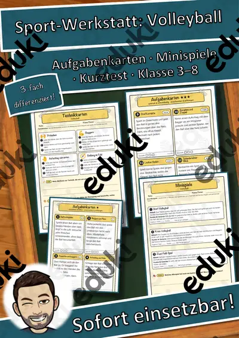
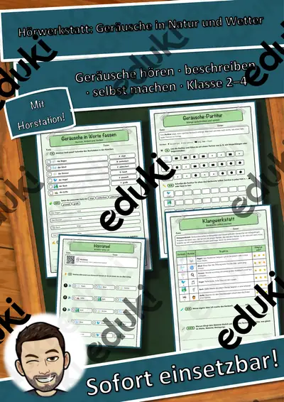

E-Sport – ist das Sport? – Lesespurgeschichte mit Rätselaufgaben (Klasse 10)
E-Sport – ist das Sport? – Lesespurgeschichte Sport (Klasse 10)Schick deine Klasse auf eine Lesespur mitten in eine Debatte, die viele Jugendliche bewegt! „E-Sport ist doch kein Sport, da sitzt man nur“, sagt Joelle. Kenan widerspricht: „Probier es mal aus – das ist härter, als du denkst!“ Beim Projekttag „Zocken oder Sport?“ im Jugendzentrum sammeln die beiden Fakten und Argumente: Im Foyer klären sie, was E-Sport überhaupt ist, an der Turnierbühne sehen sie Teams, Regeln und eine Schiedsrichterin, in der Reaktionsecke testen sie ihre Reaktionszeit. Im Bewegungsraum zeigt eine E-Sport-Trainerin, warum ihr Team auch Fitness trainiert, in der Gesundheitsecke geht es um Haltung, Augen, Pausen und die Gefahr der Computerspielsucht. An der Debattenwand prüfen sie den Sportbegriff, am Verbandstisch erfahren sie, wie der organisierte Sport E-Sport bisher einordnet – und im Abstimmungsforum entscheidet die Klasse selbst. Padi, ein Stoff-Controller mit Gesicht, ist immer dabei. Am Ende jedes Abschnitts verrät ein Hinweis den nächsten Ort auf dem Plan – nur wer genau liest, findet den Weg und sammelt alle geheimen Buchstaben zum Lösungswort.
Die perfekte Lesespur für den SPORTUNTERRICHT der 10. Klasse – ideal für Sporttheorie, Regenstunden und Vertretungsstunden, als Einstieg in eine Pro-und-Contra-Debatte oder fächerübergreifend mit Deutsch (Erörterung), Sozialkunde und Medienbildung: Sie verbindet sinnentnehmendes Lesen mit einer sachlich-neutralen Auseinandersetzung mit dem Sportbegriff, Gesundheit am Bildschirm und Fairplay. Alle Spiele, Orte und Personen sind frei erfunden – es werden keine echten Spiele, Marken, Teams oder Logos genannt. Das Material ist SOFORT EINSETZBAR und in DREI DIFFERENZIERUNGSSTUFEN (leicht ★ / mittel ★★ / schwer ★★★) angelegt.WICHTIG: Das komplette Material ist sowohl in FARBE als auch in SCHWARZ-WEISS enthalten – ideal zum Sparen von Druckkosten.DAS IST ENTHALTEN
- Lesespurgeschichte in 3 Niveaus (leicht, mittel, schwer)
- farbiger Plan des Jugendzentrums als Suchkarte
- Hörverstehen mit QR-Code zur MP3 (selbstständiges Hören mit Kopfhörern)
- vier Aufträge auf dem Weg: eine Rechenaufgabe, ein Quiz, eine Zuordnung und ein Steckbrief
- Rätselseite (Wörter-Suchsel + Fragen zum E-Sport)
- Ausmalbild zum Thema (Bildschirm und Bewegung)
- ausführliches Lösungsblatt für die Lehrkraft
- alles zusätzlich als komplette Schwarz-Weiß-VarianteSO GEHT DIE LESESPURDie Jugendlichen lesen ab START, finden im Text den nächsten Ort, suchen ihn auf dem Plan und lesen bei dieser Station weiter. An jeder richtigen Station gibt es einen Buchstaben. Eingeplante Sackgassen (Kickertisch, Garderobe, Tischtennisplatte, Getränketheke) sind keine Stationen und dienen der Selbstkontrolle. Am Ende werden die gesammelten Buchstaben umgestellt und ergeben ein geheimes Lösungswort. (Die Lösungen sind selbstverständlich nur im Lösungsblatt für die Lehrkraft enthalten.)INHALTLICHER SCHWERPUNKTBegriff E-Sport (organisierter Wettkampf in Videospielen) und Abgrenzung zum Spielen zum Spaß, Teams, Turniere und Regeln, Reaktionszeit und Hand-Auge-Koordination, Fitnesstraining als Ausgleich, Gesundheitsrisiken durch langes Sitzen, Augen und Haltung, Computerspielstörung, Merkmale des Sportbegriffs, Pro- und Contra-Argumente, Haltung des organisierten Sports und Debatte um Gemeinnützigkeit, begründete eigene Meinung.ABGEDECKTER LEHRPLAN (Klasse 10, Sport)
- Sport (LehrplanPLUS Bayern) – Jahrgangsstufe 10: Sport und Gesellschaft – den Sportbegriff und aktuelle Entwicklungen im Sport kritisch reflektieren, Standpunkte begründen; Gesundheit – Bewegungsmangel und Ausgleich durch Bewegung; Fairness im Wettkampf.
- Deutsch – Lesen: Sachtexten gezielt Informationen entnehmen; Argumentieren und Erörtern; Zuhören: einem Sachhörtext folgen (Hörverstehen mit MP3).
- Mathematik – Sachaufgaben mit Grundrechenarten und Prozenten.
- Fächerübergreifend / Kompetenzen: Medienbildung, Gesundheitserziehung, Sozialkunde.
Geeignet für Freiarbeit, Stationenlernen, Vertretungsstunden, Wochenplan, Projekttage, Sporttheorie bei Hallenbelegung und Distanzunterricht. Klassenstufe 10.
Ähnliche Materialien

Trainer Lückentext mit Wortspeicher Hörverstehen und Suchsel

Spielregeln erfinden – eigene Spiele ausdenken, testen, verbessern – Lesespurgeschichte mit Rätselaufgaben (Klasse 3)

Bewerbung & Praktikum – Paket Vorstellungsgespräch, Test & Vertrag: 6 Einheiten (Klasse 7–10)

Hörwerkstatt Geräusche: Körperklänge und Partitur – Hörstation, 3 Stufen & Test (Klasse 2–4)

Musik und Gefühle – wie Musik uns bewegt – Lesespurgeschichte mit Rätselaufgaben (Klasse 3)

Jugendlicher Lückentext mit Wortspeicher Hörverstehen und Suchsel

Ein Schlitten nach eigenem Plan – zeichnen, bauen, testen – Lesespurgeschichte mit Rätselaufgaben (Klasse 3)
